Classification
Image Classifications¶
Challenges :
-
Fine-Grained Categories(eg.different kinds of cats)
-
Background Clutter
-
illumination Changes
-
Deformation
-
Occlusion
Machine Learning: Data-Driven Approach
- Collect a dataset of images and labels
- Use Machine Learning to train a classifier
- Evaluate the classifier on new images
Image Classification Datasets¶
- MNIST
10 classes: Digits 0 to 9 28x28 grayscale images 50k training images 10k test images Results from MNIST often do not hold on more complex datasets!
- CIFAR10
10 classes
50k training images (5k per class)
10k testing images (1k per class)
32x32 RGB images
- CIFAR100
100 classes
50k training images (500 per class)
10k testing images (100 per class)
32x32 RGB image
20 superclasses with 5 classes each:
Aquatic mammals: beaver, dolphin, otter, seal, whale
Trees: Maple, oak, palm, pine, willow
- ImageNet
1000 classes
\(\approx\) 1.3M training images (~1.3K per class)
50K validation images (50 per class)
100K test images (100 per class)
Performance metric: Top 5 accuracy Algorithm predicts 5 labels for each image
one of them needs to be right
test labels are secret!
Images have variable size, but often resized to 256x256 for training
There is also a 22k category version of ImageNet, but less commonly used
- MIT Places
365 classes of different scene types
\(\approx\) 8M training images
18.25K val images (50 per class)
328.5K test images (900 per class)
Images have variable size, often resize to 256x256 for training
- Omniglot
1623 categories: characters from 50 different alphabets
20 images per category
Meant to test few shot learning
First classifier: Nearest Neighbor¶
def train(imgaes,labels):
#Machine learning!
return model
def predict(model,test_images):
#Use model to predict labels
return test_labels
Distance¶
- \(L_1 \ distance\) \(d_1(I_1,I_2)=\sum_p|I_1^p-I_2^p|\)
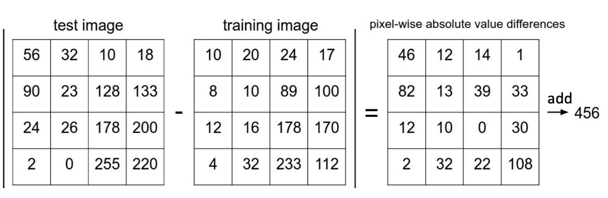
import numpy as np
class NearestNeightbor:
def __init__(self):
pass
def train(self,X,y):
'''X is NxD where each row is an example;y is a 1-dimension f size N'''
self.Xtr = X
self.ytr = y
def predict(self,X):
'''X is NxD where each row is an example we wish to predict label for'''
num_test = X.shape[0]
Ypred = np.zeros(num_test,dtype = self.ytr.dtype)
for i in xrange(num_test):
distances = np.sum(np.abs(Self.Xtr - X[i,:]),axis = 1)
min_index = np.argmin(distances)
Ypred[i]=self.ytr[min_index]
return Ypred
补：numpy
- With N examples, how fast is training? A: O(1)
- With N examples, how fast is testing? A: O(N) BAD!!
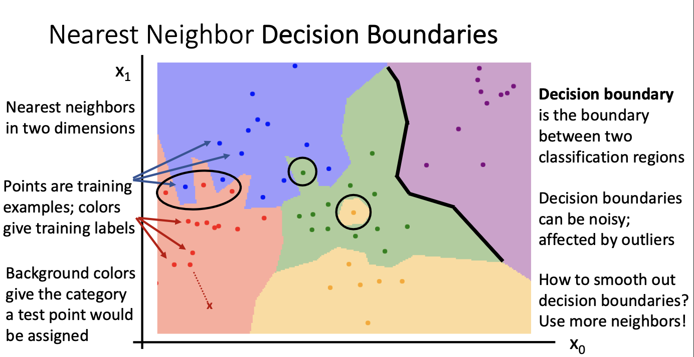
K-Nearest Neighbors¶
- Instead of copying label from nearest neighbor, take majority vote from K closest points
- Using more neighbors helps smooth out rough decision boundaries
- Using more neighbors helps reduce the effect of outliers
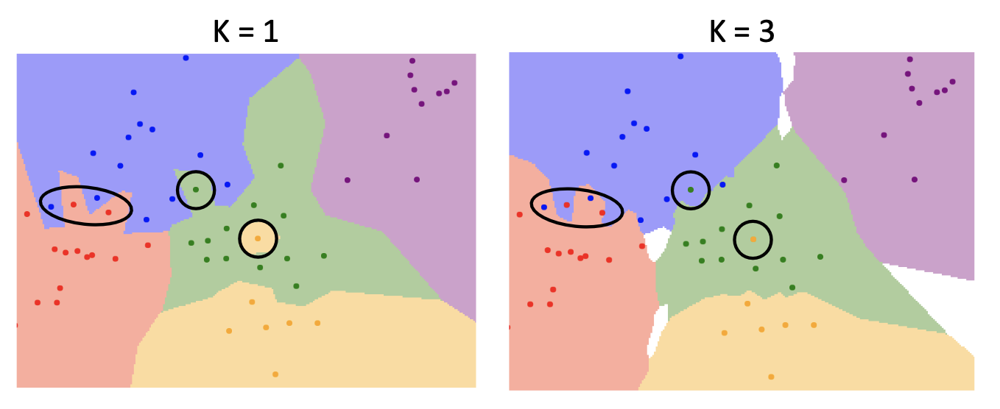
- When \(K > 1\) there can be ties between classes. Need to break somehow!
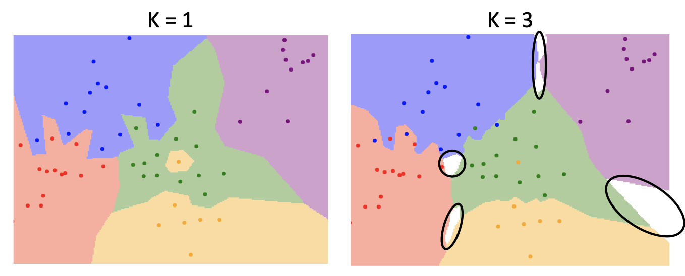
Distance Metric
- \(L_1\) (Manhattan) distance
-
\(L_2\) (Euclidean) distance : \(d_2(I_1,I_2)=\sqrt{\sum_p(I_1^p-I_2^p)^2}\)
-
With the right choice of distance metric, we can apply K-Nearest Neighbor to any type of data!
Hyperparameters¶
hyperparameters: choices about our learning algorithm that we don’t learn from the training data; instead we set them at the start of the learning process
- Very problem-dependent. In general need to try them all and see what works best for our data / task.
Setting Hyperparameters
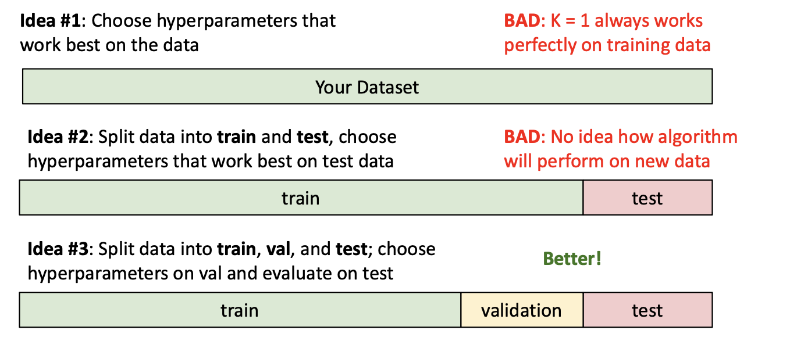
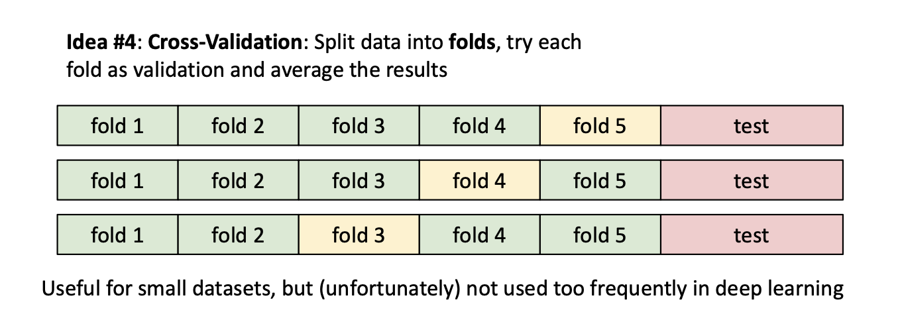
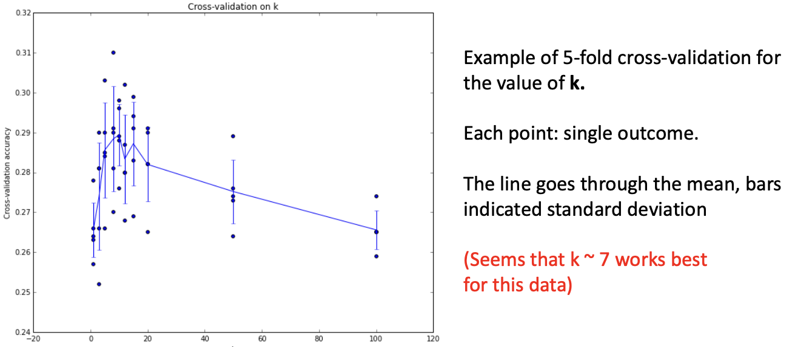
K-Nearest Neighbor: Universal Approximation¶
- As the number of training samples goes to infinity, nearest neighbor can represent any(*) function!
Example : Refer to PPT
- Problem: Curse of Dimensionality
Curse of dimensionality: For uniform coverage of space, number of training points needed grows exponentially with dimension
Original image is CC0 public domain
K-Nearest Neighbor on raw pixels is seldom used
- - Very slow at test time
- - Distance metrics on pixels are not informative
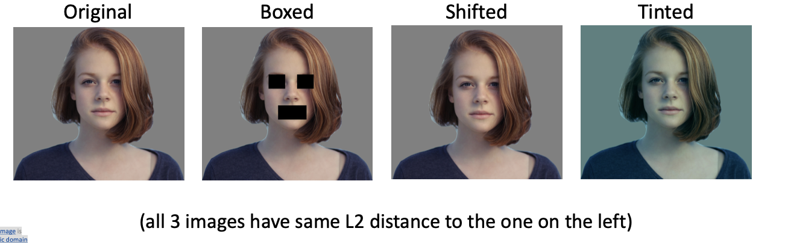
- Nearest Neighbor with ConvNet features works well!
Linear Classifiers¶
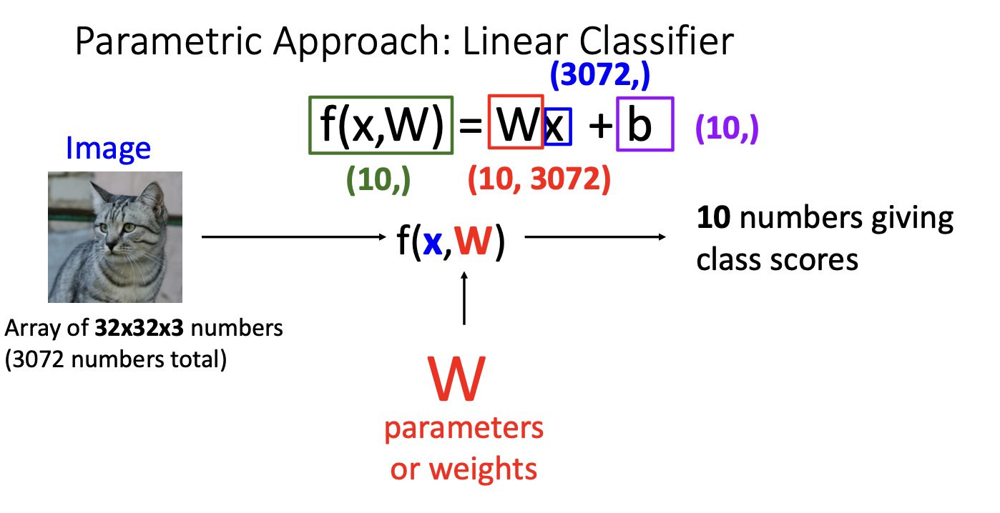
Bias Trick¶
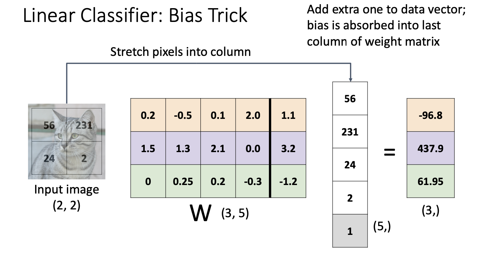
- Less commonly used in computer vision
Predictions are Linear!¶
- A single template cannot capture multiple modes of the data !
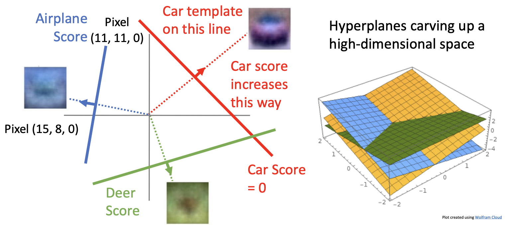
- Explain : 这里是简化成为二维的形式来理解的(eg.pixel -- (x,y))
沿着梯度方向 z(which is the score) 增长最快
- Hard Cases for a Linear Classifier
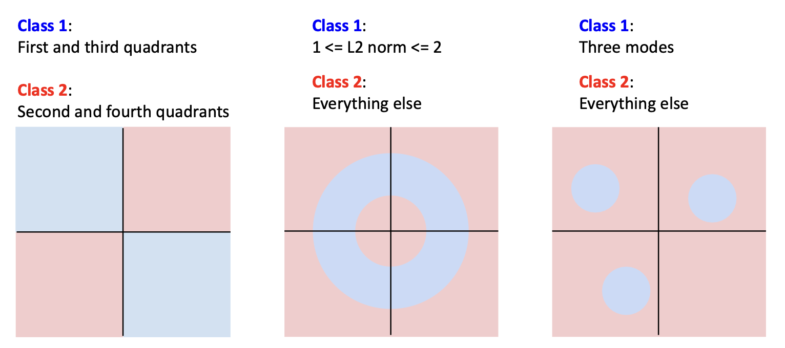
- Perceptron couldn’t learn XOR
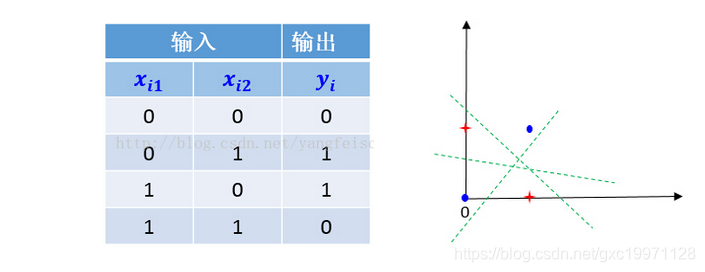
Loss Function¶
- Use a loss function to quantify how good a value of W is
- Find a W that minimizes the loss function (optimization)
A loss function(Also called: objective function; cost function) tells how good our current classifier is
Low loss = good classifier
High loss = bad classifier
- Negative loss function sometimes called reward function, profit function, utility function, fitness function, etc
Given a dataset of examples \(\{(x_i,y_i)\}_{i=1}^N\) where \(x_i\) is image and \(y_i\) is (integer) label
Loss for a single example is \(L_i(f(x_i,W),y_i)\)
Loss for the dataset is average of per-example losses : \(L=\frac{1}{N}\sum_iL_i(f(x_i,W),y_i)\)
- Multiclass SVM Loss
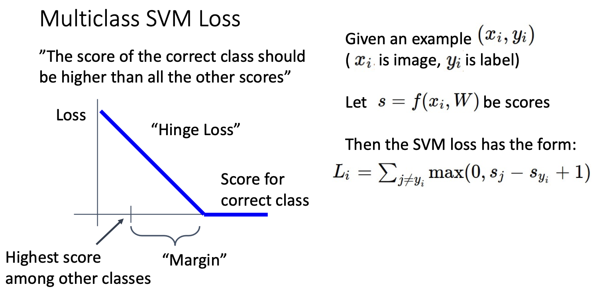
- Example
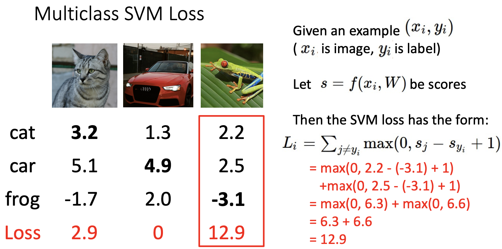
\(L=(2.9+0+12.9)/3\)
- What are the min and max possible loss?
min - 0
max - infinity
- If all the scores were random, what loss would we expect?
May achieve a \(L = 1\) (all are small scores randomly)
- What would happen if the sum were over all classes? (including \(i = y_i\))
All scores be inflatted by a constant one
-
What if the loss used a mean instead of a sum?
-
What if we used this loss instead? \(L_i = \sum_{j\ne y_i}max(0,s_y-s_{y_i}+1)^2\)
-
Suppose we found some W with L = 0. Is it unique?
No! 2W is also has L = 0 !
How to Address this problem ? -- Regularization!
Regularization: Beyond Training Error¶
\(L(W) = \frac{1}{N}\sum_{i=1}^NL_i(f(x_i,W),y_i)+\lambda R(W)\)
$\lambda = $ regularization strength (hyperparameter)
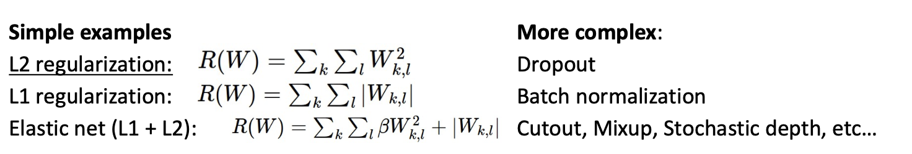
Purpose of Regularization:
-
Express preferences in among models beyond ”minimize training error”
-
Avoid overfitting: Prefer simple models that generalize better
- Improve optimization by adding curvature
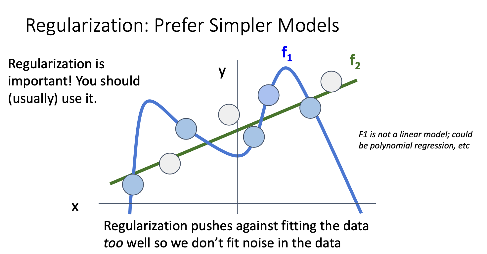
Cross-Entropy Loss (Multinomial Logistic Regression)¶
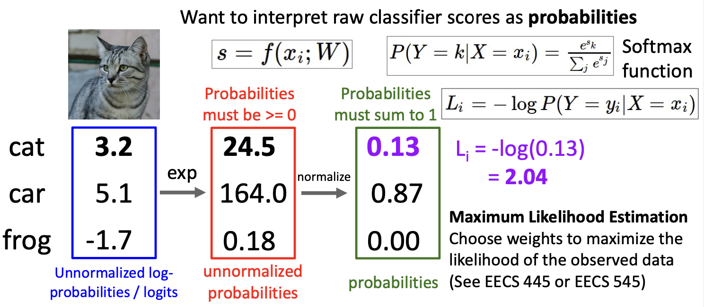
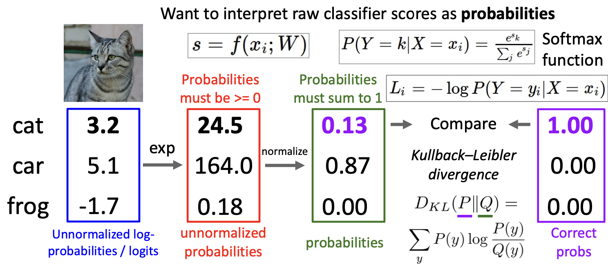
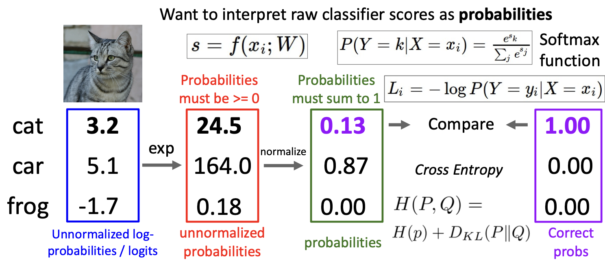
-
What is the \(min / max\) possible loss \(L_i\)? A: Min - 0, max - +infinity
-
If all scores are small random values, what is the loss? A: -log(C) (near log(10) ≈ 2.3 at the beginning stage)
在这个问题中，我们假设有一个分类任务，模型输出的分数经过softmax函数转换成概率分布。由于所有的分数都是小随机值，这意味着模型对每个类别的预测概率都会接近于均匀分布，即每个类别被预测为正类的概率都接近于1/类别数。
假设有C个类别，那么每个类别被预测为正类的概率大约是1/C。根据交叉熵的定义，当真实标签的概率分布接近于均匀分布时，交叉熵的值大约是-log(1/C)。由于-log(1/C) = log(C)，所以交叉熵的值大约是log(C)。
log(10)是以10为底的对数，约等于2.3。所以当所有分数都是小随机值时，交叉熵的值大约是2.3。这意味着模型的预测与真实标签之间的差异性比较大，因为预测的概率分布接近于均匀分布，而真实标签的概率分布是非均匀的。
Compare¶
Q: What happens to each loss if I slightly change the scores of the last datapoint?
A: Cross-entropy loss will change; SVM loss will stay the same
Q: What happens to each loss if I double the score of the correct class from 10 to 20?
A: Cross-entropy loss will decrease, SVM loss still 0
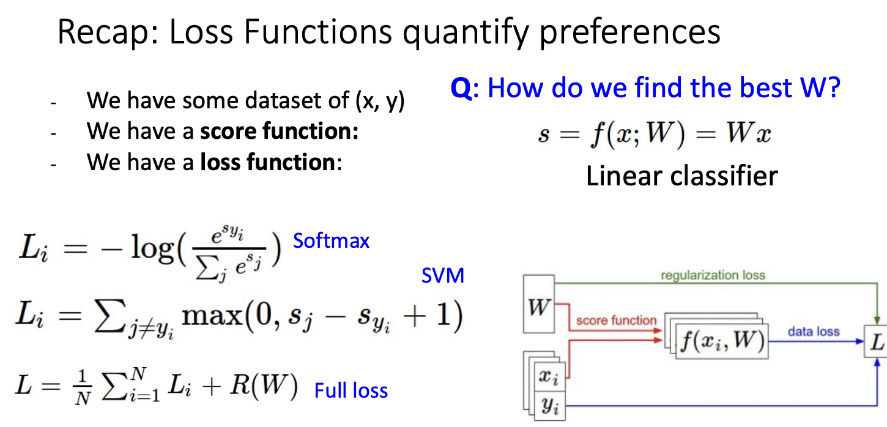
Optimization¶
\(w^* = argmin_wL(w)\)
idea¶
#1: Random Search (bad idea!)¶
- 15.5% accuracy! not bad!
bestloss = float("inf")
for num in xrange(1000):
W = np.random.randn(10,3073)*0.0001
loss = L(X_train,Y_train,W )
if loss < bestloss:
bestloss = loss
bestW = W
print 'in attemp %d the loss was %f , best %f' %(num,loss,bestloss)
# Assume X_test is [3073 x 10000], Y_test [10000 x 1]
scores = Wbest.dot(Xte_cols)
# 10X10000,the class scores for all test examples
Yte_predict = np.argmax(scores,axis=0)
# and calculate accuracy (fraction of predictions that are correst)
np.mean(Yte_predict == Yte)
# returns 0.1555
#2: Follow the slope¶
Computing Gradients¶
- Numeric gradient: approximate, slow, easy to write
\(\frac{df(x)}{dx}=lim_{h\to 0}\frac{f(x+h)-f(x)}{h}\)
- Analytic gradient: exact, fast, error-prone
- Loss is a function of W : Use calculus to compute an analytic gradient
In practice: Always use analytic gradient, but check implementation with numerical gradient. This is called a gradient check.
def grad_check_sparse(f,x,analytic_grad,num_checks = 10,h=1e-7):
'''
sample a few random elements and only return numerical in this dimensions
'''
from pytorch import torch
torch.autograd.gradcheck(func,inputs,eps=1e-06,atol = 1e-05,rtol = 0.001,raise_exception = True,check_sparse_nnz=False,nodet_tol = 0.0)
Gradient Descent¶
w = initialize_wights()
for t in range(num_steps):
dw = compute_gradient(loss_fn,data,w)
w-=learning_rate*dw
Hyperparameters:
- Weight initialization method - Numberofsteps - Learningrate
Stochastic Gradient Descent
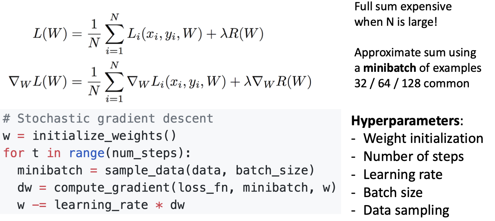
- Think of loss as an expectation over the full data distribution \(p_{data}\)
- Approximate expectation via sampling
\(L(W)=E_{(x,y)-p_{data}}[L(x,y,W)]+\lambda R(W) \approx \frac{1}{N}\sum_{i=1}^NL(x_i,y_i,W)+\lambda R(W)\)
\(\triangledown L(W)=\triangledown_W E_{(x,y)-p_{data}}[L(x,y,W)]+\lambda \triangledown _WR(W)\)
Problems with SGD
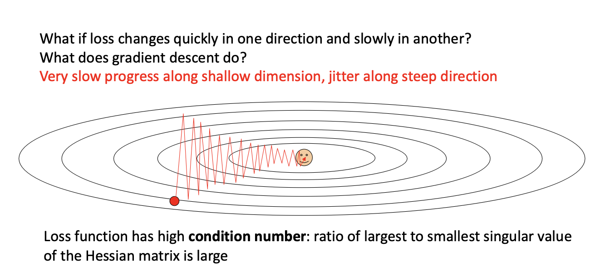
-
What if the loss function has a local minimum or saddle point? : Zero gradient, gradient descent.
-
Our gradients come from minibatches so they can be noisy!
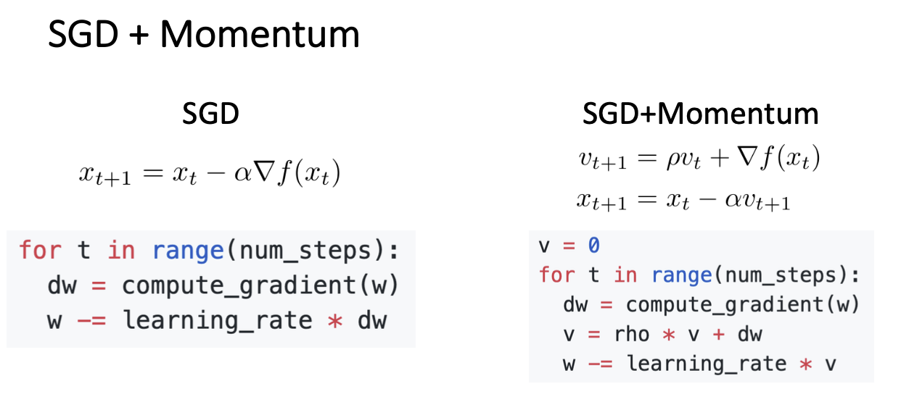
- Build up “velocity” as a running mean of gradients
- Rho gives “friction” typically rho=0.9 or 0.99
You may see SGD+Momentum formulated different ways, but they are equivalent - give same sequence of x
Nesterov Momentum
\(v_{t+1} = \rho v_t -\alpha \triangledown f(x_t +\rho v_t)\)
\(x_{t+1}=x_t + v_{t+1}\)

- However the \(x_t + \rho v_t\) term is really annoying because we want to update in terms of \(x_t \ \triangledown f(x_t)\)
Change of variables \(\tilde{x_t}=x+t +\rho v_t\) and we get :
$ v_{t+1} = \rho v_t -\alpha \triangledown f(\tilde{x_t})$
\(\tilde x_{t+1} =\rho v_t +(1+\rho )v_{t+1}=\tilde{x_t}+v_{t+1}+\rho(v_{t+1}-v_t)\)
v = 0
for t in range(num_steps):
dw = compute_gradient(w)
old_v = v
v = rho*v -learning_rate*dw
w -= rho* old_v -(1+rho)*v
AdaGrad
- Added element-wise scaling of the gradient based on the historical sum of squares in each dimension.
- “Per-parameter learning rates” or “adaptive learning rates”
grad_squared = 0
for t in range(num_steps):
dw = compute_gradient(w)
grad_square += dw*dw
w -= learning_rate * dw / (frad_square.sqrt()+1e-7)
Q: What happens with AdaGrad?
Progress along “steep” directions is damped; progress along “flat” directions is accelerated !
- Problem : slow down step eventually
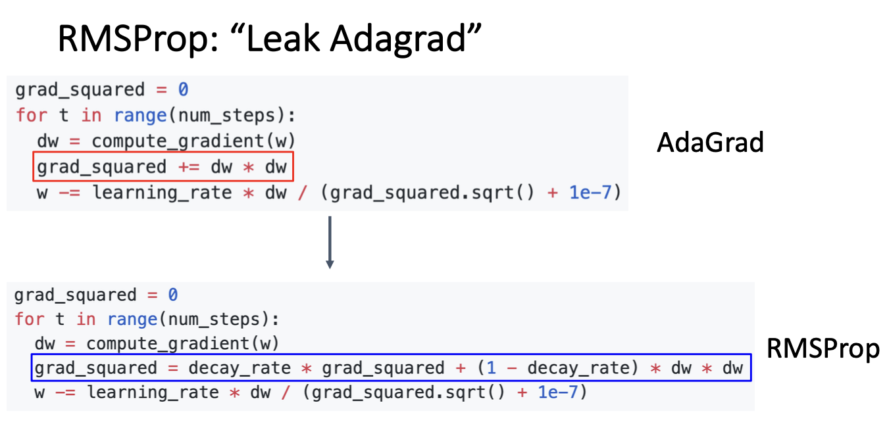
Adam(almost):RMSProp + Momentum
# Adam & Momentum
moment1 = 0
moment2 = 0
for t in range(num_steps):
dw = compute_gradient(w)
moment1 = beta1*moment1 + (1-beta1)*dw
moment2 = beta2*moment2+(1-beta2)*dw*dw
w -= learning_rate*moment1 / (moment2.sqrt()+ 1e-7)
Q: What happens at t=0? (Assume \(beta_2\) = 0.999)
- At the very beginning, may dividing a num close to ZERO
Bias correction
moment1 = 0
moment2 = 0
for t in range(num_steps):
dw = compute_gradient(w)
moment1 = beta1*moment1 + (1-beta1)*dw
moment2 = beta2*moment2+(1-beta2)*dw*dw
moment1_unbias = moment1 / (1-beta1 ** t)
moment2_unbias = moment2 / (1-beta2 ** t)
w -= learning_rate*moment1 / (moment2.sqrt()+ 1e-7)
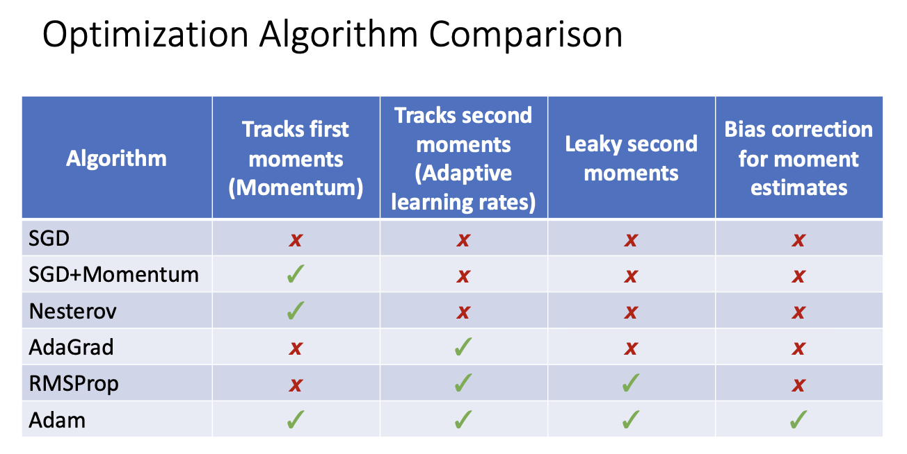
Second-Order Optimization¶
First-Order Optimization¶
- Use gradient to make linear approximation
- Step to minimize the approximation
Second-Order Optimization¶
- Use gradient and Hessian to make quadratic approximation
- Step to minimize the approximation
Second-Order Taylor Expansion:
\(L(w)\approx L(w_0)+(w-w_0)^T\triangledown _wL(w_0)+\frac{1}{2}^TH_wL(w_0)(w-w_0)\)
Solving for the critical point we obtain the Newton parameter update:
\(w^* = w_0 -H_wL(w_0)^{-1}\triangledown_wL(w_0)\)
Q: Why is this impractical? Hessian has \(O(N^2)\) elements Inverting takes \(O(N^3)\) with $N = $(Tens or Hundreds of) Millions
In practice:
- - Adam is a good default choice in many cases SGD+Momentum can outperform Adam but may require more tuning
- - If you can afford to do full batch updates then try out L-BFGS (and don’t forget to disable all sources of noise)
创建日期: 2024年2月15日 00:02:09